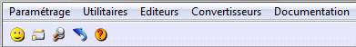

Harmony affiche au départ le menu principal, c'est à dire les choix de premier niveau :

Remarque :
Pour abandonner le menu, frappez la touche Echap (ou F9). Vous pouvez aussi directement fermer la fenêtre par le choix Fermeture du menu système ou en cliquant sur le bouton correspondant de la fenêtre Windows, ou par la touche Alt+F4.